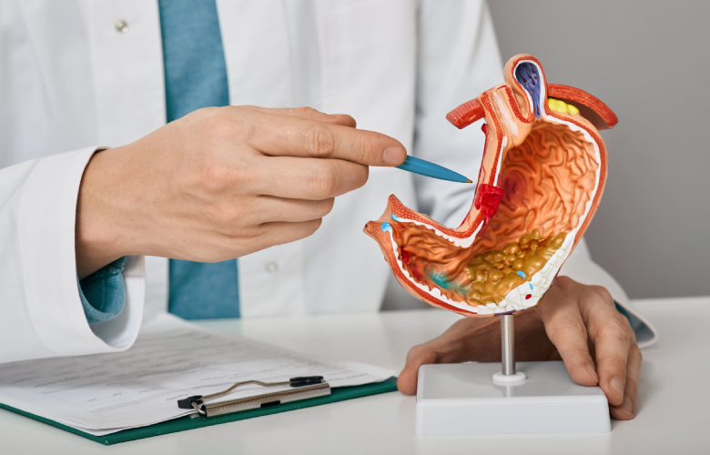
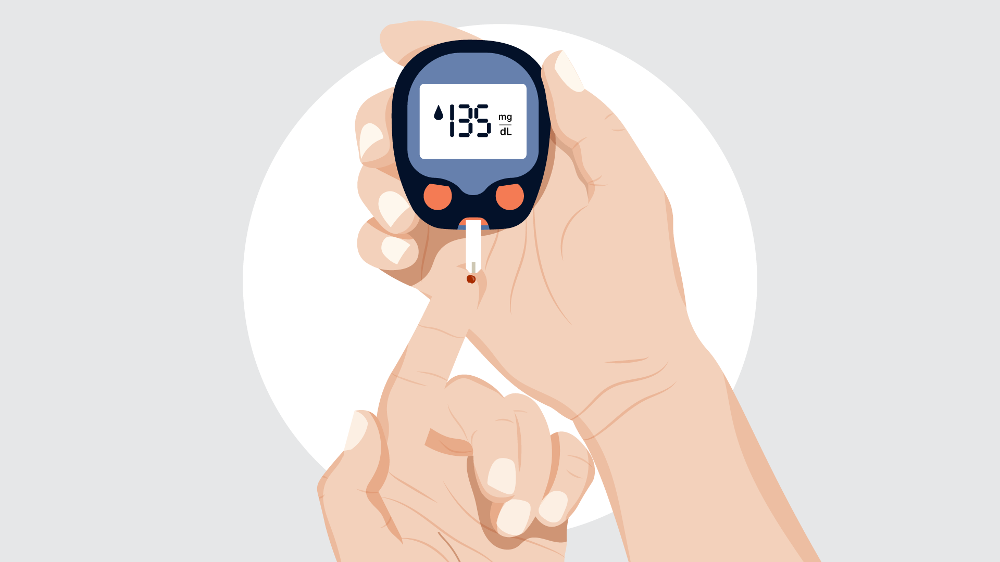
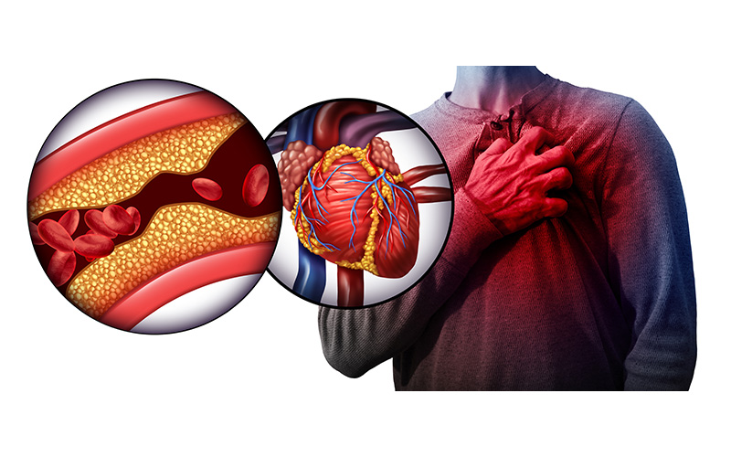
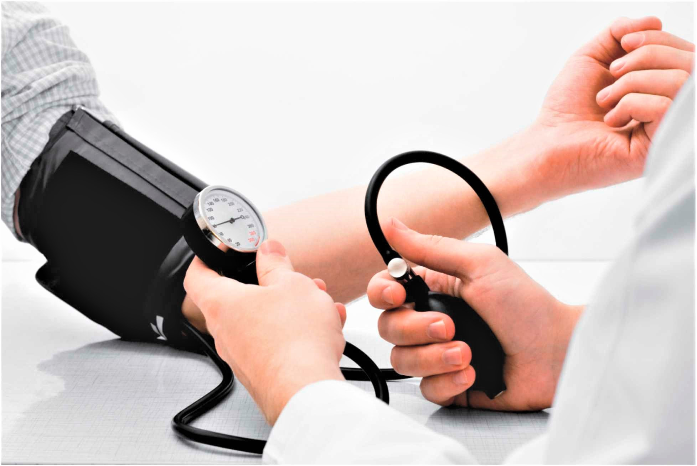
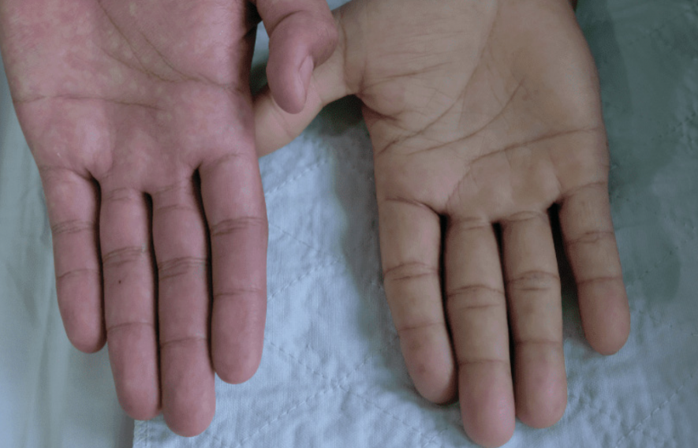
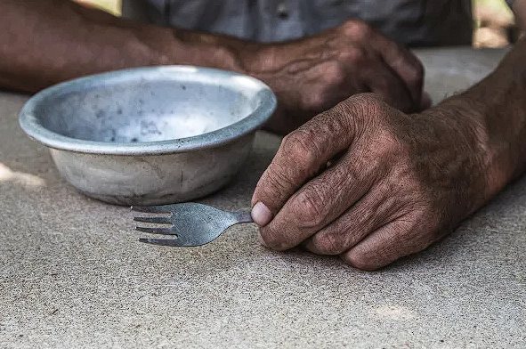
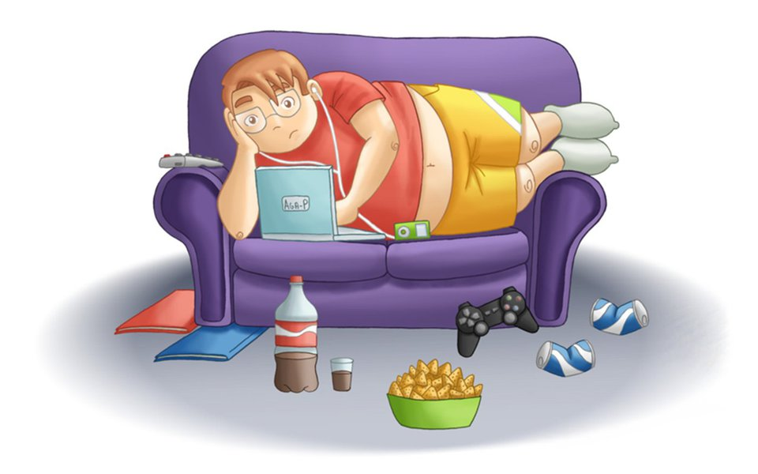
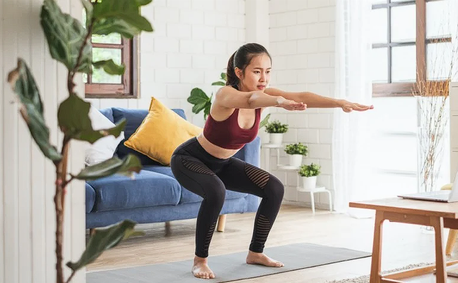

Muitas doenças estão relacionadas a uma má alimentação que é composta basicamente de dois aspectos principais: A falta ou a pouca ingestão dos alimentos essenciais para a saúde na dieta alimentar, como legumes, verduras, frutas, cereais e grãos e o excesso de consumo de alimentos nocivos, entre eles as gorduras, o açúcar e o sal.
Algumas dessas doenças são Gastrite, Diabetes, Colesterol elevado, Obesidade, Hipertensão, Insônia e dificuldade para respirar, Transtornos alimentares, Derrame, Anemia e Desnutrição.
Gastrite
A gastrite se caracteriza por uma inflamação na mucosa do estômago. E é provocada, em parte, por má alimentação e a realização de poucas refeições por dia.
Para evitar que ela ocorra, é preciso fracionar mais as refeições. Ou seja, comer em pequenas porções ao longo do dia.
Além disso, é importante evitar alimentos que irritam a mucosa do estômago.
São eles café, frituras, doces, bebidas alcoólicas, alimentos condimentados e outros.

Diabetes
A Diabetes do tipo II está diretamente relacionada com o excesso de peso e a obesidade.
Portanto, para prevenir o seu aparecimento, é imprescindível procurar um nutricionista.
Ele vai elaborar um cardápio de acordo com as suas necessidades.
De forma geral, é importante reduzir o consumo de carboidratos, gorduras e promover uma reeducação alimentar.
Exercícios físicos também são importantes.

Colesterol Alto
O colesterol é um tipo de gordura encontrada em nosso organismo importante para o seu funcionamento normal.
No entanto, o aumento nos índices de colesterol LDL – um dos tipos de colesterol – pode provocar infarto e derrame, pelo acúmulo em artérias e coronárias.
Cerca de 70% do colesterol é produzido pelo nosso próprio corpo e 30% é proveniente da dieta.
Assim sendo, é importante consumir de forma moderada alimentos ricos em gordura e evitar alimentos industrializados ricos em gorduras trans.
E aumentar o consumo de fibras e praticar exercícios.

Obesidade
É uma doença caracterizada pelo acúmulo excessivo de gordura corporal.
A obesidade pode ser provocada por diversos fatores.
Dentre eles, a redução do gasto energético e a ingestão excessiva de calorias.
Assim como no caso da Diabetes, é importante promover uma reeducação alimentar total e fazer atividades físicas.
A alimentação também deve ser elaborada por um profissional de nutrição.
Hipertensão
Fator de risco para doenças cardiovasculares, a hipertensão é o aumento da pressão arterial.
Para prevenir o seu aparecimento, é importante reduzir o consumo de sal de cozinha e alimentos ricos em sódio, como os industrializados.
Praticar atividades físicas também é importante.

Insônia e dificuldade para respirar
Entre as doenças causadas por má alimentação destacam-se aquelas que afetam a qualidade de vida, como a insônia e a dificuldade para respirar.
Esses problemas são causados pelo excesso de gordura a região do pescoço e tórax., pressionando a faringe, canal pelo qual passa o ar e que pode resultar em dificuldade para respirar, roncos e insônia.
A recomendação é melhorar a alimentação e realizar atividades físicas para controlar o peso corporal e reduzir a gordura acumulada.
Transtornos alimentares
Entre as doenças causadas pela má alimentação os transtornos alimentares estão entre os mais graves, pois podem levar a uma alteração rápida no peso, gerando problemas diversos de saúde.
A soma de uma alimentação inadequada, busca de padrões de beleza e questões emocionais pode levar a anorexia, bulimia e compulsão alimentar.
Nesses casos, a alteração na alimentação deve ter suporte de uma especialista como psicólogo ou psiquiatra, de acordo com a gravidade do caso.
Derrame
Um derrame causado por uma placa que se acumula em um vaso sanguíneo e depois se desprende como um coágulo que viaja para o cérebro e cria um bloqueio pode estar relacionado à má nutrição.
Os derrames danificam o cérebro e prejudicam o funcionamento, às vezes levando à morte.
Alimentos ricos em sal, gordura e colesterol aumentam o risco de derrame.
Anemia
A anemia está associada ao consumo insuficiente de ferro e ácido fólico.
Esses elementos são encontrados principalmente nas carnes, no fígado de boi, nos alimentos integrais, no feijão e nos vegetais verde-escuros, como couve, espinafre e rúcula.

Desnutrição
A desnutrição está associada tanto à falta do consumo de alimentos quanto ao consumo insuficiente de calorias e nutrientes necessários para o funcionamento adequado do corpo.


Doenças relacionadas ao sedentarismo
O sedentarismo é a ausência de exercícios físicos de forma regular. E um fator de risco para doenças coronárias, cujo no Brasil, dados do Ministério da Saúde estimam 350 mil mortes anuais por problemas ligados ao coração. Segundo a Organização Mundial da Saúde (OMS), o sedentarismo é considerado o quarto maior fator de risco de mortes no mundo. A recomendação padrão da Organização Mundial da Saúde (OMS) é de praticar, ao menos, duas horas e meia de esforço moderado por semana ou 75 minutos de atividade intensa.
A falta de atividade física na rotina pode ser causa de muitas doenças, entre elas, podemos destacar: Obesidade, Problemas cardiovasculares (Infarto ou AVC), Aumento do colesterol, Atrofia muscular, Aumento da pressão arterial, Problemas articulares, Diabetes tipo 2 e Distúrbios do sono.
Depois de 12 semanas, o organismo já começa a sentir efeitos positivos da prática de atividade física realizada de 30 a 60 minutos por dia, na frequência de cinco vezes por semana. Para sair do sedentarismo é importante realizar: Fazer um check up com seu médico cardiologista para uma avaliação clínica, fazer avaliação física com profissional de educação física, começar devagar, com atividade leve a moderada, ficar atento às limitações do próprio corpo, fazer alongamento e aquecimento, manter-se hidratado e manter uma alimentação saudável e equilibrada.
Exercícios para evitar o sedentarismo
A da Organização Mundial da Saúde (OMS) recomenda o mínimo de 150 minutos por semana de atividade física, sendo exercícios de baixo ou alto impacto, as realizações dessas atividades causam inúmeros benefícios tanto físicos quanto mental, mas para isso ocorrer é preciso procurar um profissional medico antes de iniciar para conferir sua condição física.
Os índices que a OMS recomenda são:
Para crianças e adolescentes: Pelo menos uma média de 60 minutos por dia de intensidade moderada a vigorosa, principalmente aeróbica. Atividades de intensidade vigorosa e aquelas que fortalecem músculos e ossos pelo menos 3 dias por semana. Importante limitar o estado sedentário, principalmente diante da TV, celular, computadores e correlacionados.
Para adultos (entre 18 e 64 anos): Os adultos devem fazer pelo menos de 150-300 minutos (o equivalente a 20-30 minutos de atividades por dia, considerando todos os dias da semana) de atividade aeróbica moderada ou de 75-150 minutos de atividade física aeróbica de intensidade vigorosa, ou ainda uma combinação equivalente de intensidade moderada e vigorosa ao longo da semana. Também se recomenda atividades de fortalecimento muscular em 2 ou mais dias por semana.
Para idosos (65 anos ou mais): A recomendação de tempo e intensidade é a mesma dos adultos, mas considerando os tipos de atividades, condições de saúde e/ou limitações do indivíduo. Os idosos também devem fazer atividades que trabalhem o equilíbrio funcional e treinamento de força, que ajudam a evitar também as quedas.
Exercícios para iniciantes
É preciso separar de 15 a 20 minutos do dia para realizar uma série de exercícios para o corpo todo, iniciando com uma sequência de repetições, para ir aumentando conforme os dias seguintes, e para esses treinos é preciso realizar os exercícios com calma e realizar intervalos entre os exercícios de ate no máximo um minuto.

Exercícios: Ponte
Deite-se de bruços no chão, numa superfície plana. Levante o corpo apoiando-se sobre as pontas dos pés e os antebraços (mantendo-os paralelos, à frente da cabeça). Todo o corpo deve permanecer suspenso, formando uma espécie de triângulo retângulo.
Para que serve: um dos exercícios mais potentes para se fazer usando somente o corpo, a ponte fortalece várias musculaturas, já que mobiliza a área de trás das pernas, os glúteos, o entorno da coluna vertebral e, claro, o abdômen. Ela ajuda muito a evitar dores na lombar e na coluna.
Quantas séries: você pode começar com três séries de 20 segundos por dia. A cada mês, à medida que a musculatura se fortalecer, pode aumentar 10 segundos por série. Adeptos do exercício chegam a fazer sequências de 90 a 120 segundos.
No que prestar atenção: é preciso manter o alinhamento do quadril com o corpo. Cuidado para ele não ficar “para baixo”, formando um “U”. E só faça a ponte em superfícies planas, para não causar qualquer problema na coluna.
Com uma cadeira, faça movimentos de sentar e levantar em sequências de 10 a 12 vezes por série. Tente fazer com que o movimento de assentar não seja muito rápido, fortalecendo a musculatura trabalhada.
Para que serve: o agachamento auxilia a tonificar as penas e a musculatura do bumbum (outra vez um exercício bom para os glúteos!).
Quantas séries: a partir do segundo dia de atividades, você pode fazer entre 3 e 4 séries, sempre respeitando os limites do seu corpo.
No que prestar atenção: mantenha os pés alinhados, com as pernas abertas, sem ultrapassar a linha do quadril. Ao descer o corpo, contraia o abdômen e não permaneça sentado no banco (volte a subir logo que chegar).
O agachamento isométrico é bem simples. Basta sentar-se “no vazio”, apoiando as costas na parede e buscando manter os joelhos flexionados em um ângulo de 90º.
Para que serve: o agachamento fortalece a musculatura das pernas, ajuda no alinhamento da coluna, aumentando a sua produtividade nas atividades cotidianas.
Quantas séries: você pode fazer entre 3 e 4 séries, cada uma com 20 a 40 segundos de duração.
No que prestar atenção: mantenha toda a linha da coluna, incluindo o pescoço, alinhada com a parede. Deixe os pés e as pernas na linha do quadril.
O aviãozinho, ou stiff unilateral, exige um pouquinho mais de coordenação motora. De pé, com os braços abertos (no formato Cristo Redentor), coluna ereta e os pés unidos, faça movimentos de reclinar o tronco para frente, levantando, ao mesmo tempo, uma das pernas para trás. Flexione bem levemente o joelho da perna que não se movimenta.
Para que serve: outro exercício muito completo, o aviãozinho trabalha a parte de trás da coxa e os glúteos, além dos músculos que atuam estabilizando a coluna e o dorso.
Quantas séries: comece com 6 séries de 10 a 12 movimentos, sendo 3 com cada perna.
No que prestar atenção: mais uma vez, tome cuidado em manter a coluna ereta. Mantenha o abdômen contraído e movimente apenas o quadril. Faça o movimento devagar, para não correr o risco de perder o equilíbrio e se estatelar no chão.
Não deixaremos de fora aquele exercício que é visto por muitos como o clássico da musculação: a boa e velha flexão de braço. Para fazê-la, levante o corpo com as duas mãos apoiadas no chão, alinhadas ao peito. Depois, é preciso descer o corpo até o peitoral se encontrar com o chão.
Para que serve: a flexão de braço dá conta de uma série de músculos posteriores nos braços, ombros e tronco (como o peitoral e o tríceps, aquele que balança gordurinhas e peles fora de lugar quando damos tchau);
Quantas séries: para começar, faça 3 séries de 10 movimentos. Com o tempo, aumente para 12 a 14 por vez.
No que prestar atenção: mantenha sempre o quadril e tronco alinhados. Atenção com as mãos, que devem ficar na mesma linha do peitoral. Uma dica para quem está começando é não ficar na ponta dos pés e sim apoiar-se nos joelhos para fazer o exercício.
Outro clássico das aulas de educação física, os abdominais não ficaram de fora. Tudo por uma simples razão: são muito eficientes para manter a postura e a coluna no lugar. Deite-se de barriga para cima, dobre as pernas, cruze os braços em X sobre o troco e inicie os movimentos de elevação do troco em direção dos joelhos.
Para que serve: como dissemos, mais que cuidar da barriga, as abdominais fortalecem a musculatura da lombar e o alinhamento da coluna;
Quantas séries: você pode fazer, inicialmente, 3 séries de 15 movimentos. Vá aumentando com os meses, buscando chegar a 4 séries de 25 a 30 movimentos.
No que prestar atenção: outra vez, cuidado com o alinhamento da coluna e não faça movimentos bruscos. É interessante que, principalmente o movimento de volta, seja mais lento: tente fazê-lo em um tempo de 3 a 4 segundos. Não puxe a cabeça com as mãos ou braços ao fazer a subida, pois isso pode causar um torcicolo ou algo pior.